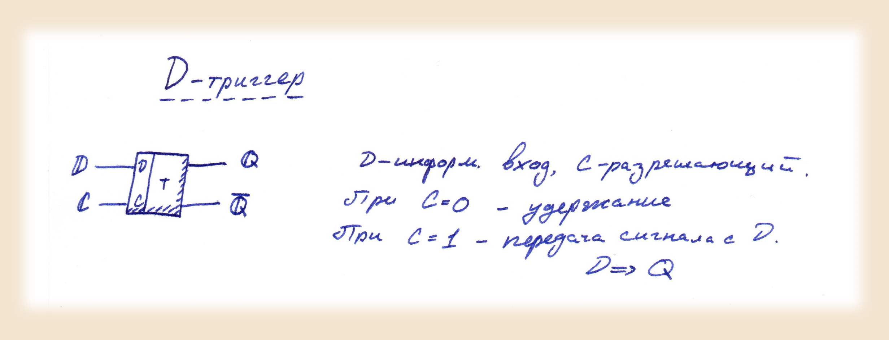
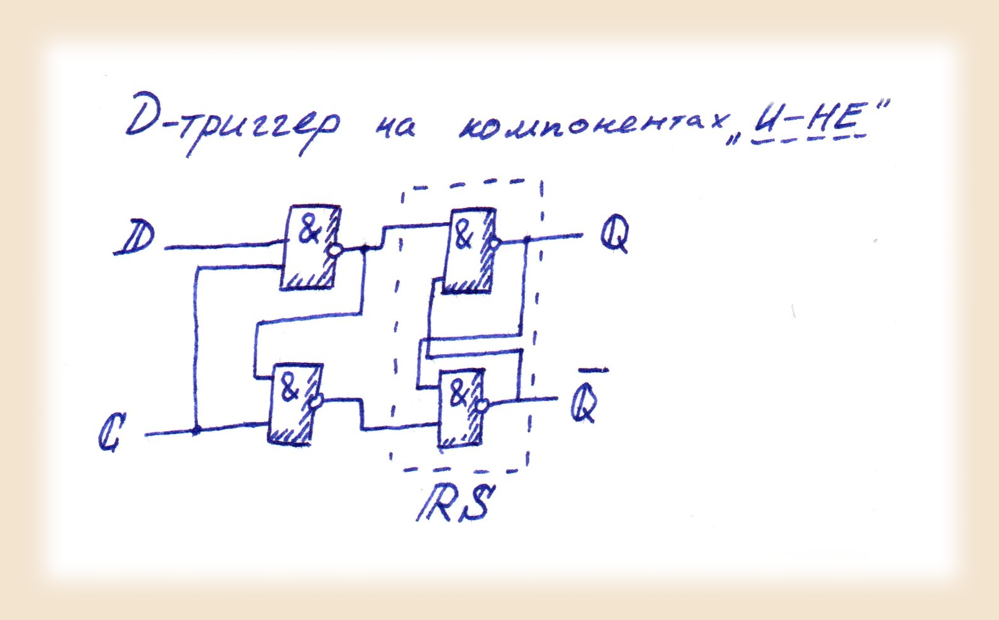

Постановка выполняемой задачи
-
В данной задаче нам необходимо:
- Построить на модели "TINA" и продемонстрировать работу D-триггера на логических элементах "И-НЕ"
- Построить на модели "TINA" и продемонстрировать работу D-триггера на микросхеме JK
Для выполнение данной работы воспользуемся ранее описанными в задаче 1 логическими элементами. Там же мы уже определили понятие триггера и описали работу JK триггера.
Для реализации D триггера воспользуемся следующими схемами и параметрами:
 Реализацию D триггера на JK схеме опишем в ходе решения, исходя из свойств этой схемы в модели TINA и параметров этого триггера описаных выше.